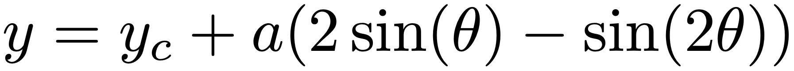
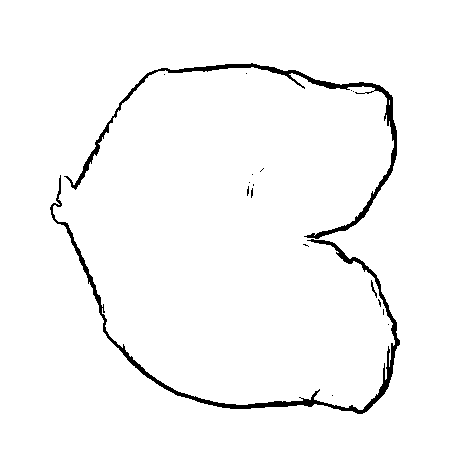

Start off by playing with this demo (taken from https://github.com/tdeck/duality). You can enter points (unfortunately not lines) in either space, and move them.
Another demo allows you to enter (but not move) points and lines (but only in the primary space).
Here is an image of a
chicken breast.
The shape can be described fairly well by a cardioid, whose
parametric equation is given by

Write a program to implement the Hough Transform which finds the cardioid in the above image.
You can assume that the scale (a=69) is known, leaving only the centre coordinates to be found.
You can further assume that the centre lies within the image. The result should look something like the following:
I used the Sobel edge detector followed by thresholding to extract features:

and the accumulator before and after log mapping is:
If you got that working, now try a
trickier image.
You should be able to get a result like this: